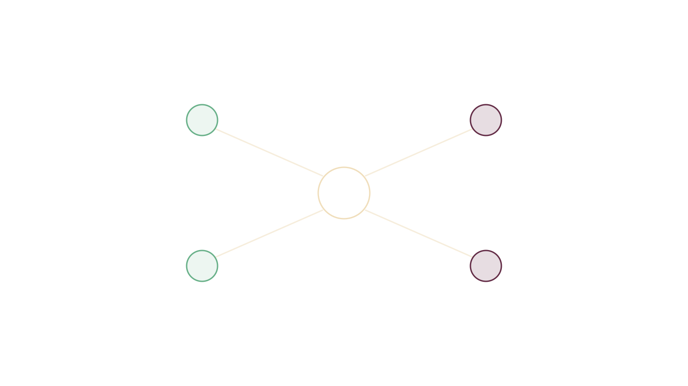
Portada
Técnicas de Programación
Semana 1 — Tópicos Generales de Ingeniería de Software
Universidad de Antioquia · Ingeniería de Sistemas · 2508307
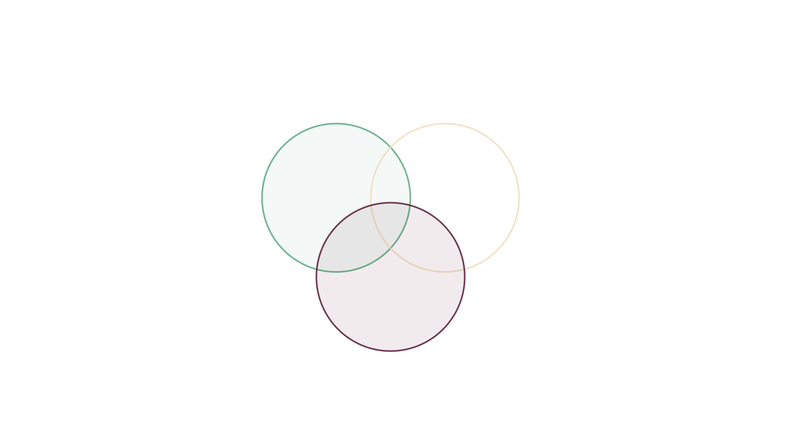
Lenguajes de programación (general)
Sintaxis, semántica y pragmática
Para usar un lenguaje de programación de forma efectiva, debemos estudiarlo y entenderlo desde tres perspectivas:
- Sintaxis: el conjunto de símbolos y reglas para formar sentencias.
- Semántica: las reglas para transformar sentencias en instrucciones lógicas.
- Pragmática: el uso de las construcciones particulares del lenguaje.
"Así como en español las letras forman palabras y las palabras forman oraciones, en los lenguajes de programación los caracteres forman sentencias, y un conjunto de sentencias forma instrucciones."
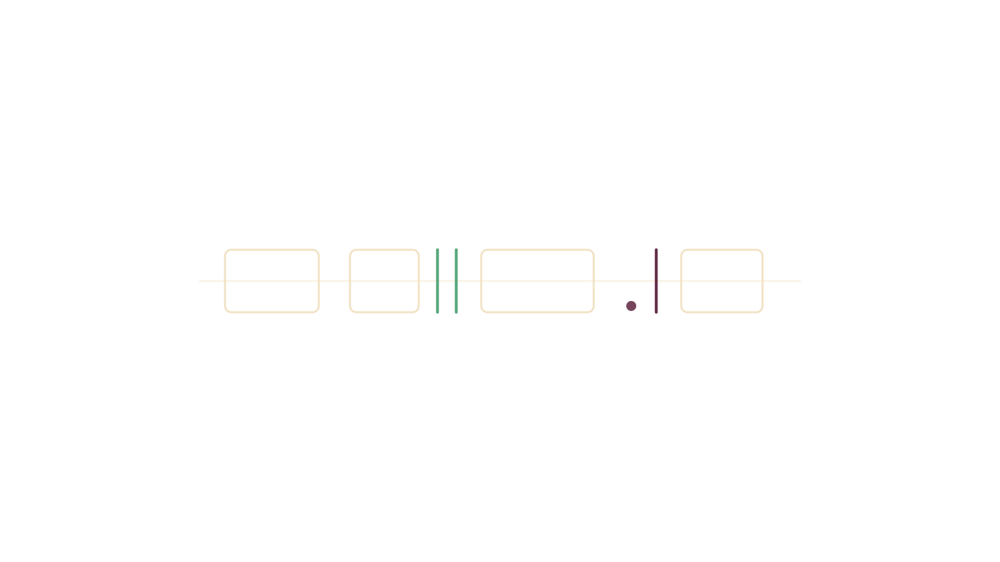
Lenguajes de programación (general)
Sintaxis
Es la estructura de una sentencia en un lenguaje de programación. Un mismo mensaje se escribe con reglas distintas según el lenguaje:
C#
Console.WriteLine("Hola Mundo!");Python
print("Hola Mundo!")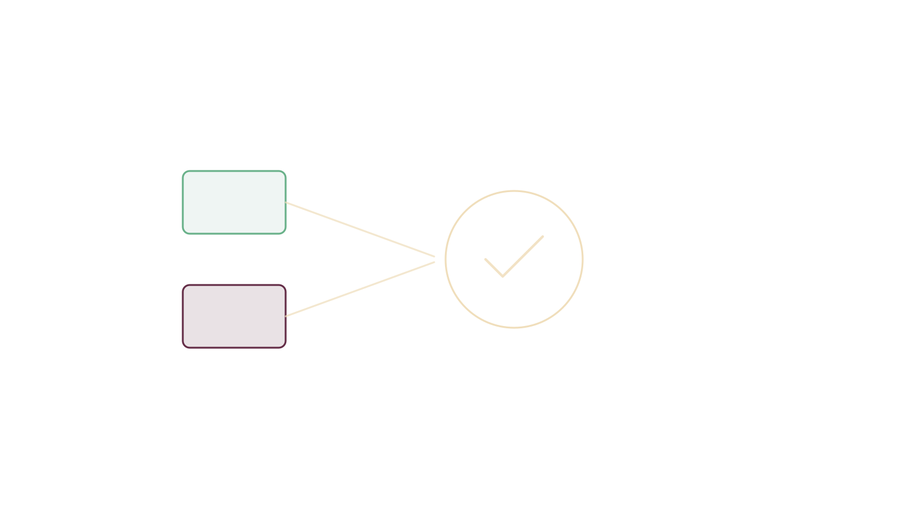
Lenguajes de programación (general)
Semántica
Se refiere al significado de la instrucción. El mismo problema — pedir un nombre y saludar — se resuelve con sintaxis distinta pero el mismo significado:
Java
public static void main(String[] args) {
Scanner input = new Scanner(System.in);
System.out.print("Ingresa tu nombre: ");
String name = input.nextLine();
System.out.println("¡Hola, " + name + "!");
}Python
name = input("Ingresa tu nombre: ")
print(f"¡Hola, {name}!")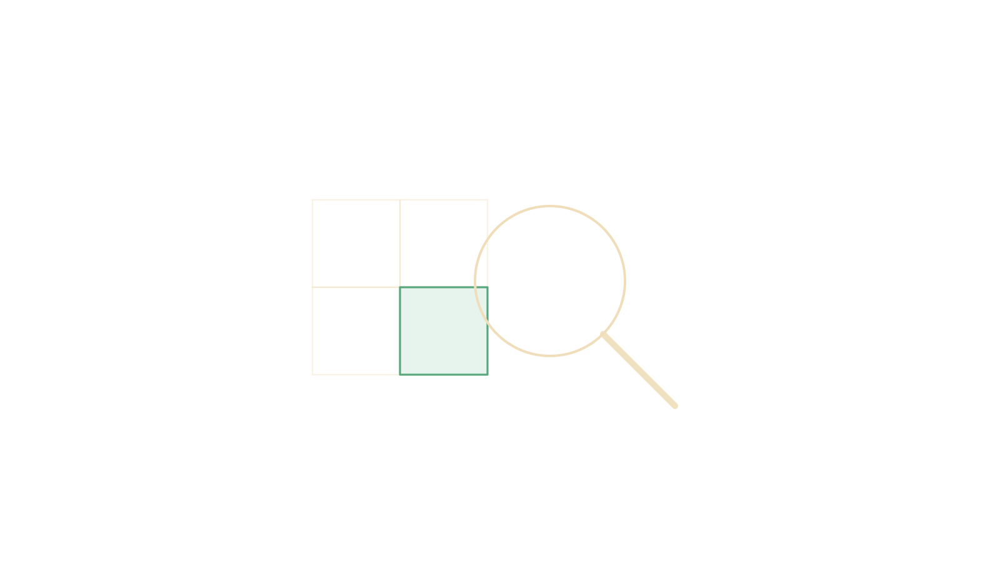
Lenguajes de programación (general)
Pragmática
En programación, la pragmática se refiere a cómo el contexto influye en la manera en que interpretamos y analizamos los problemas que queremos resolver con un lenguaje de programación.
Como vimos en el ejemplo de sintaxis, un mismo problema puede resolverse usando distintos lenguajes de programación, e incluso hay problemas que pueden resolverse aplicando sentencias o instrucciones lógicas diferentes dentro de un mismo lenguaje.
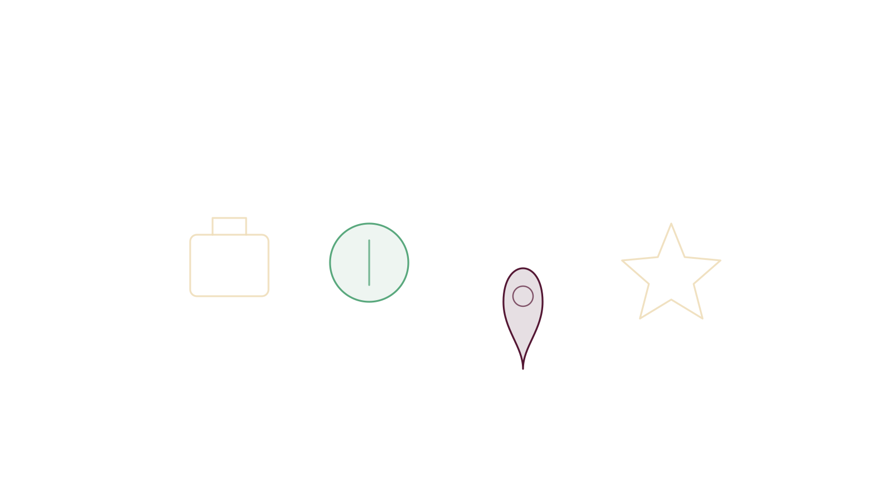
Lenguajes de programación (general)
Factores para elegir un lenguaje
- Aplicación: ¿qué lenguaje necesitas usar para desarrollar, por ejemplo, un videojuego?
- Salario: dependiendo del lenguaje de programación, la remuneración es diferente.
- Geografía: dependiendo de tu ubicación, puedes tener más o menos opciones de lenguaje.
- Popularidad: es importante si quieres trabajar como freelancer — el lenguaje debe ser lo bastante popular para generar proyectos nuevos en los que puedas trabajar.
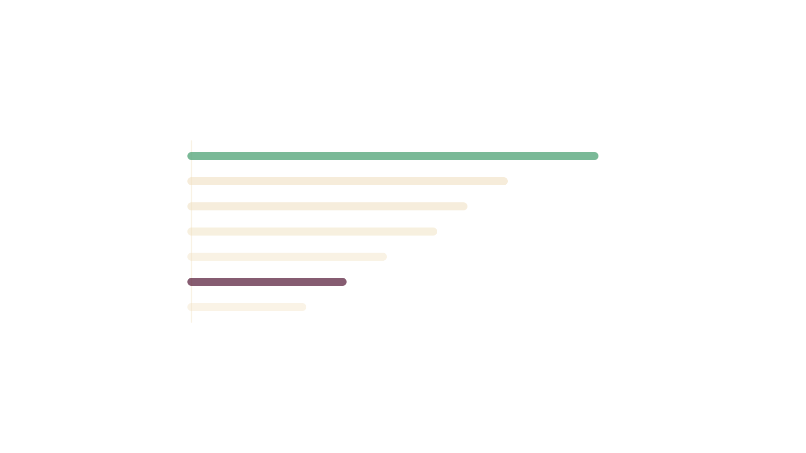
Elegir el lenguaje según el problema y la solución
Lenguajes más usados
| Lenguaje | Uso |
|---|---|
| JavaScript | 63.61 % |
| HTML/CSS | 52.97 % |
| Python | 49.28 % |
| SQL | 48.66 % |
| TypeScript | 38.87 % |
| Bash/Shell | 32.37 % |
| Java | 30.55 % |
| C# | 27.62 % |
| C++ | 22.42 % |
| C | 19.34 % |
Fuente: Stack Overflow Developer Survey, 2023
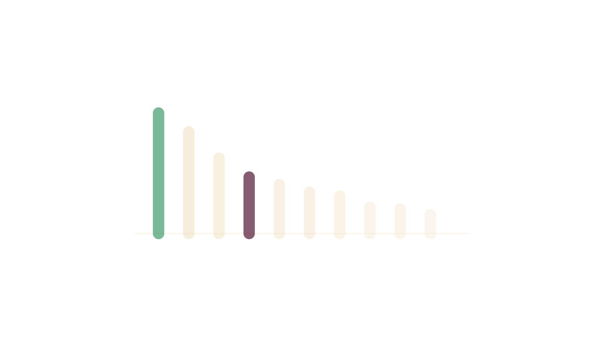
Panorama de la industria
Mejores frameworks de desarrollo web (2023)
| Framework | Uso |
|---|---|
| Node.js | 47.12 % |
| React.js | 42.62 % |
| jQuery | 28.57 % |
| Express | 22.99 % |
| Angular | 20.39 % |
| Vue.js | 18.82 % |
| ASP.NET Core | 18.59 % |
| ASP.NET | 14.90 % |
| Django | 14.65 % |
| Flask | 14.64 % |
| Next.js | 13.52 % |
| Laravel | 9.45 % |
Fuente: LambdaTest, "Best Web Development Frameworks", 2023
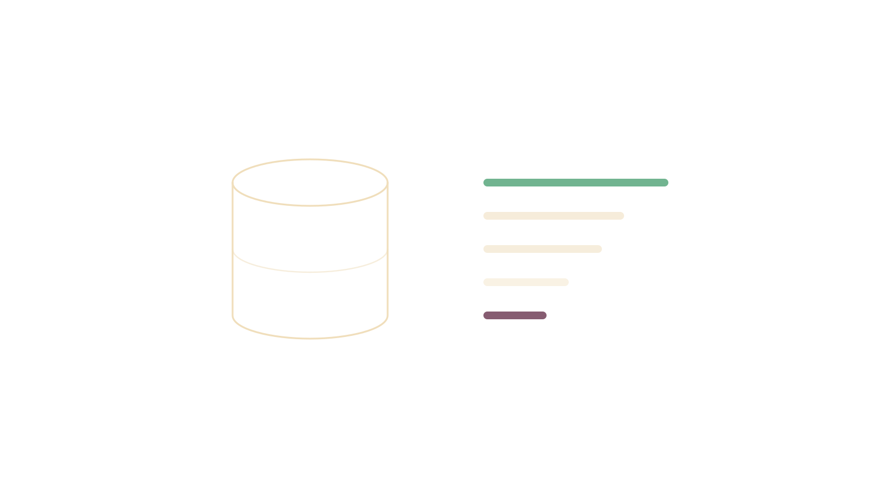
Panorama de la industria
Bases de datos más populares (2023)
- Oracle
- MySQL
- MongoDB
- Cassandra
- Microsoft SQL Server
- PostgreSQL
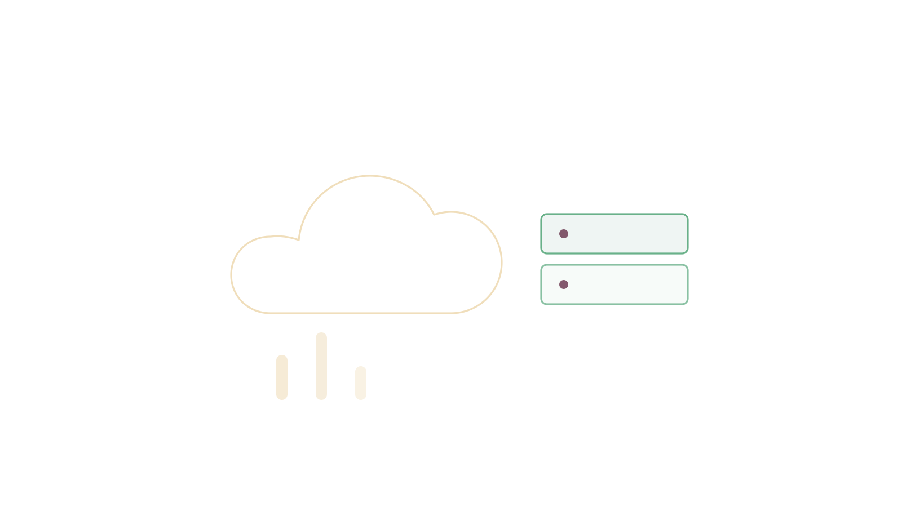
Panorama de la industria
Principales proveedores de nube (2023)
| Proveedor | Participación |
|---|---|
| AWS | ~33 % |
| Azure | ~21 % |
| Google Cloud Platform (GCP) | ~11 % |
| Oracle Cloud (OCI) | ~5 % |
| IBM Cloud | ~3 % |
Tamaño total del mercado: 626 BN$
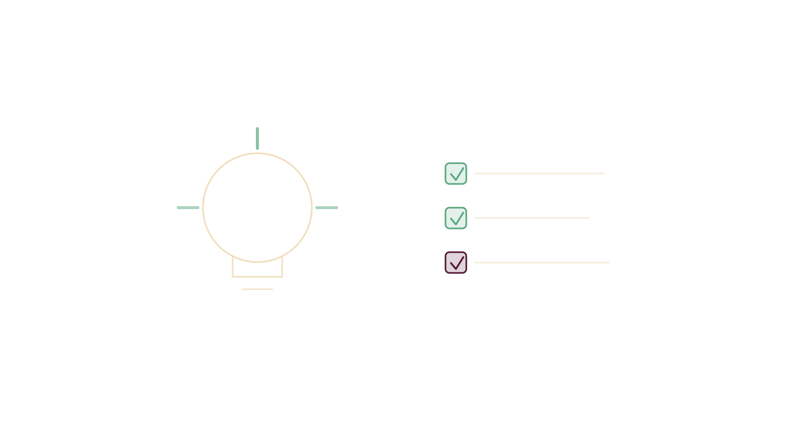
Para llevar
Ideas clave de la sesión
- Sintaxis, semántica y pragmática son las tres lentes para entender y comparar cualquier lenguaje de programación.
- La elección de lenguaje, framework, base de datos o nube depende del problema y la solución, no de una moda.
- Los rankings de popularidad son una referencia útil, pero cambian año a año — úsalos como punto de partida, no como regla absoluta.